Circle(USDC 발행사)의 수익 구조를 공개 데이터로 추적한다. 매출은 사실상 단기금리 × 발행잔액으로 결정되고, 그 가운데 약 63%가 유통비용으로 빠져나간다.
자동 갱신 · 2026-11-10 04:13 UTC · GitHub
RLDC 기준 — 유통비용까지 뺀 Circle 몫
조정 영업이익 기준 — 영업비용까지 뺀 뒤, 주식보상은 되돌린 값
| 분기 | 평균 잔액 | 금리 | 모델 준비금수익 | 공시 | 오차 | 총매출 | RLDC |
|---|---|---|---|---|---|---|---|
| 2025Q3 | $67B | 4.10% | $697M | $711M | -2.0% | $740M | $292M |
| 2025Q4 | $76B | 3.73% | $713M | $733M | -2.8% | $770M | $309M |
| 2026Q1 | $75B | 3.59% | $667M | $653M | +2.2% | $694M | $287M |
| 2026Q2 | $77B | 3.62% | $693M | $668M | +3.8% | $701M | $289M |
| 2026Q3 | $74B | 3.80% | $704M | $658M | +7.0% | $865M 일회성 | $453M 일회성 |
| 2026Q4 | $72B | 4.04% | $738M | — | — | $773M | $310M |
과거 배수 범위가 함의하는 주당가치와 현재 주가
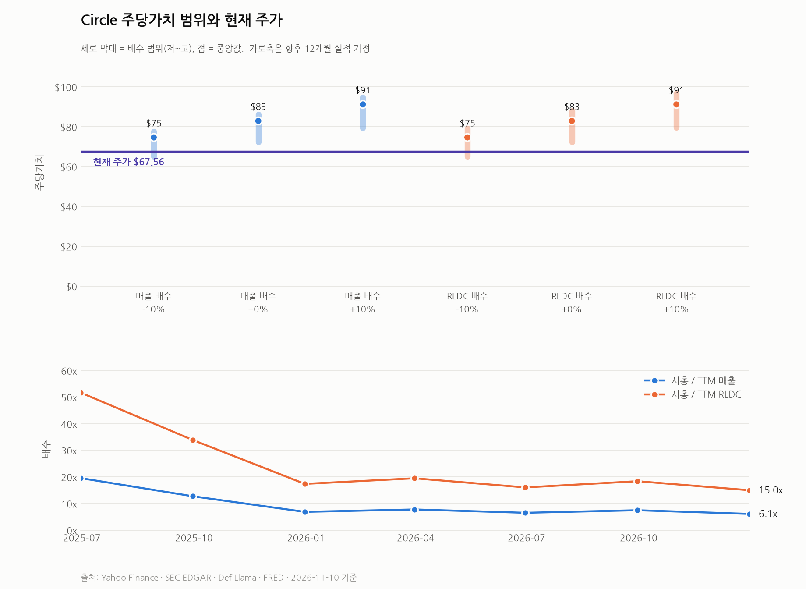
조정 영업이익 배수로 본 주당가치와 RLDC 기준 밴드의 차이
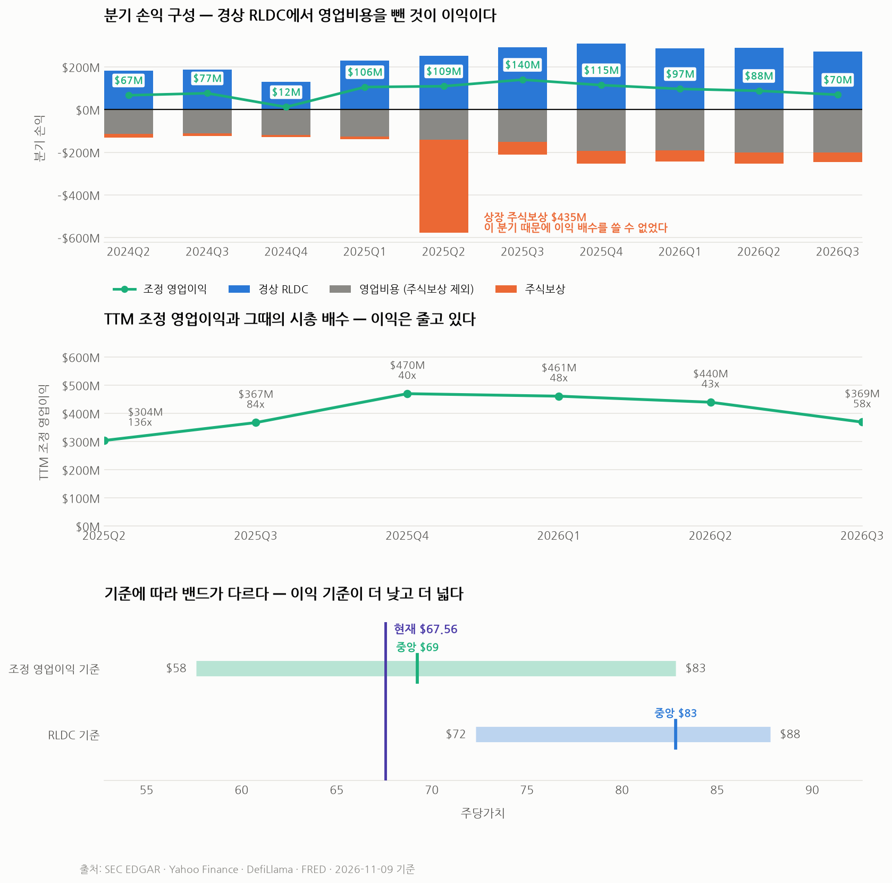
영업비용 증가가 어느 항목에서 오는지, 경상 RLDC를 얼마나 가져가는지
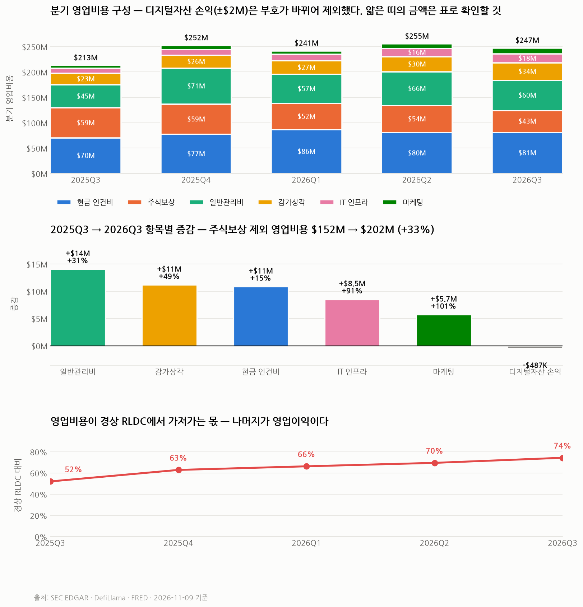
연율 변동성, 일간 수익률 분포, 향후 분포에 겹친 밸류에이션 밴드
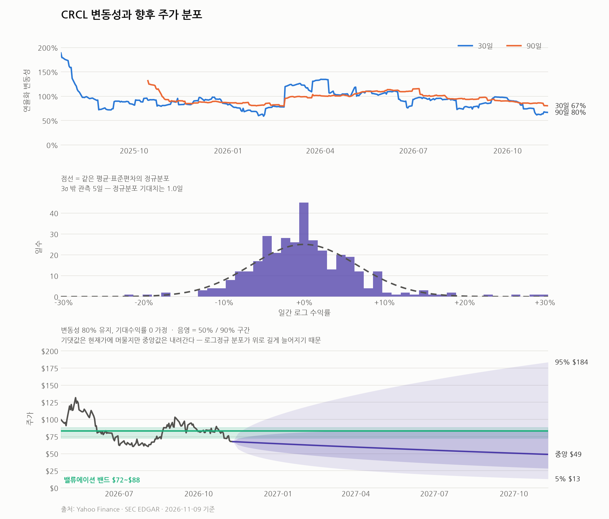
잔액과 금리로 추정한 값을 공시 실적과 대조한다
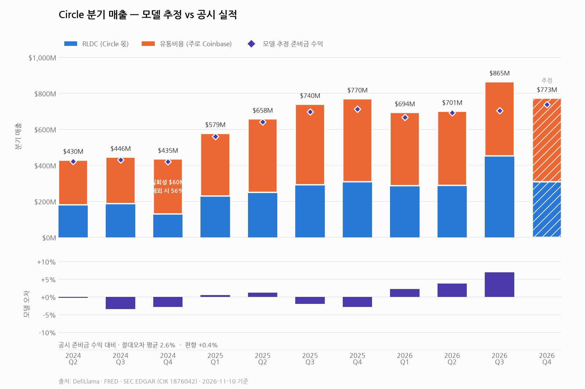
주가가 빠지는 동안 매출이 어떻게 움직였는지, 그리고 배수 변화
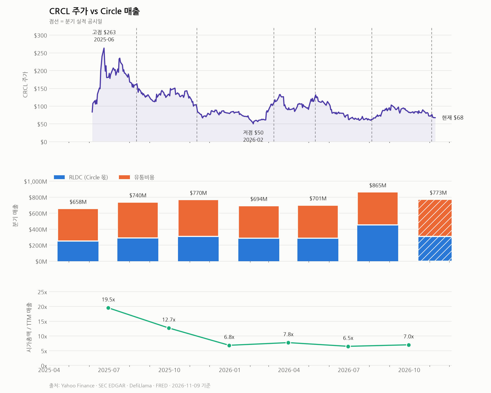
매출이 금리를 얼마나 빨리 따라가는지를 결정하는 구조
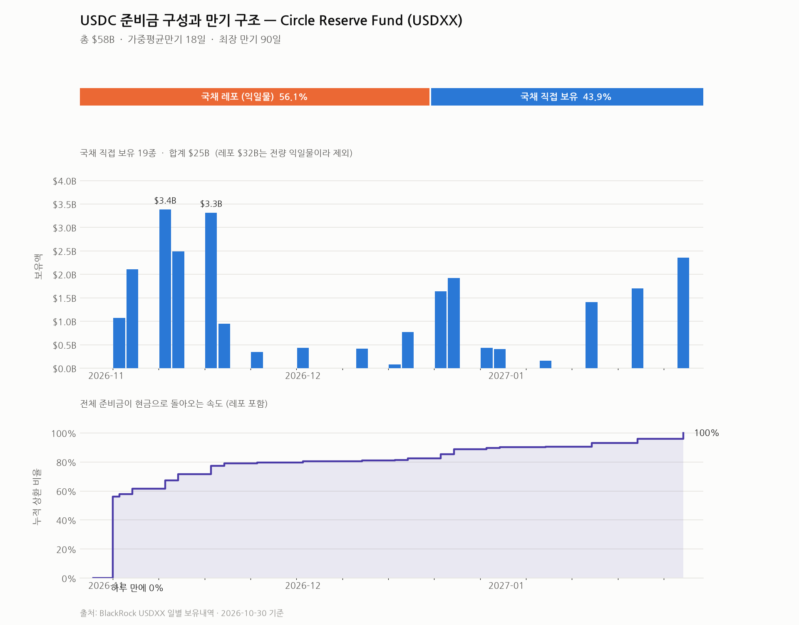
Coinbase 실효 배분율과 그 밖 파트너 비중
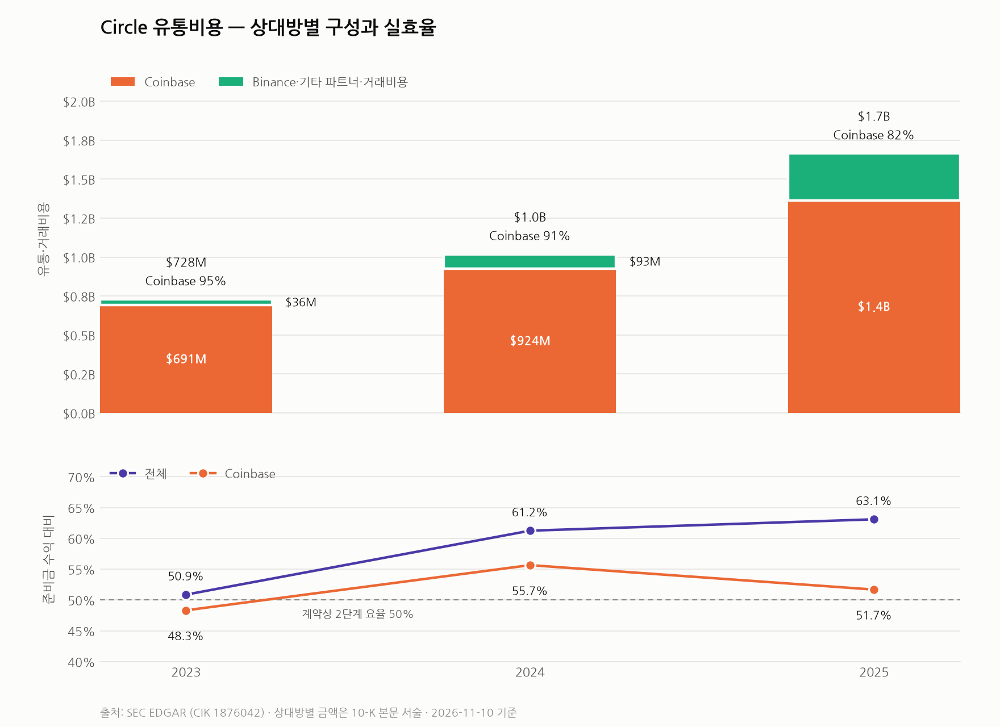
금리가 발행잔액을 움직였는지 USDT 대조군으로 검증한다
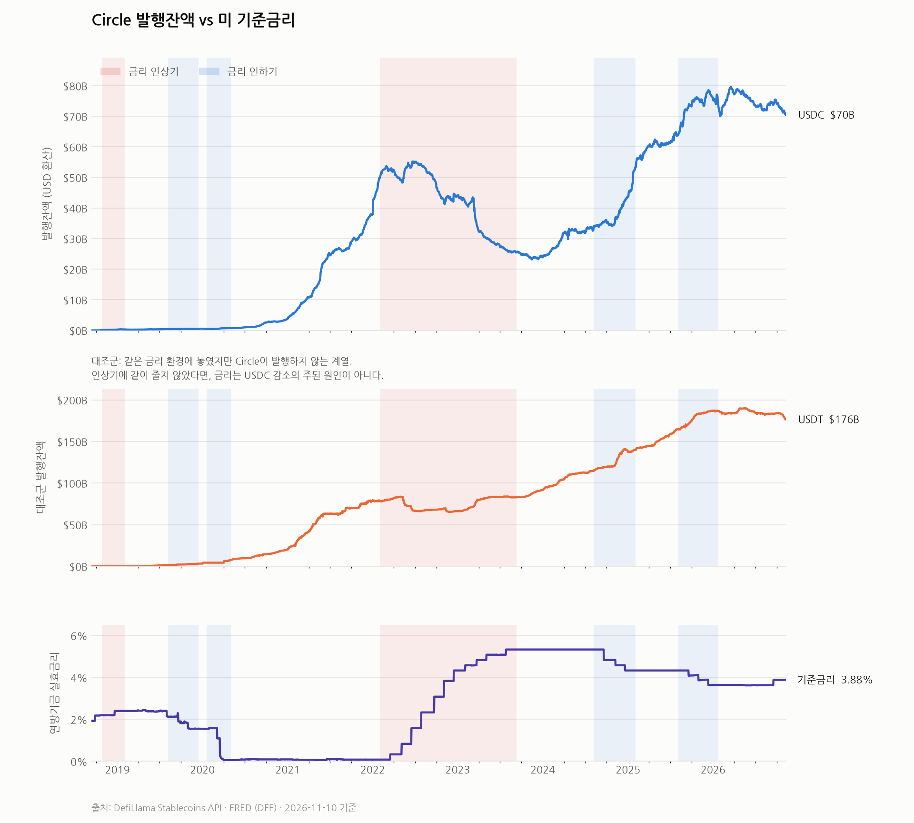
준비금 수익 외 매출의 추이와 구성
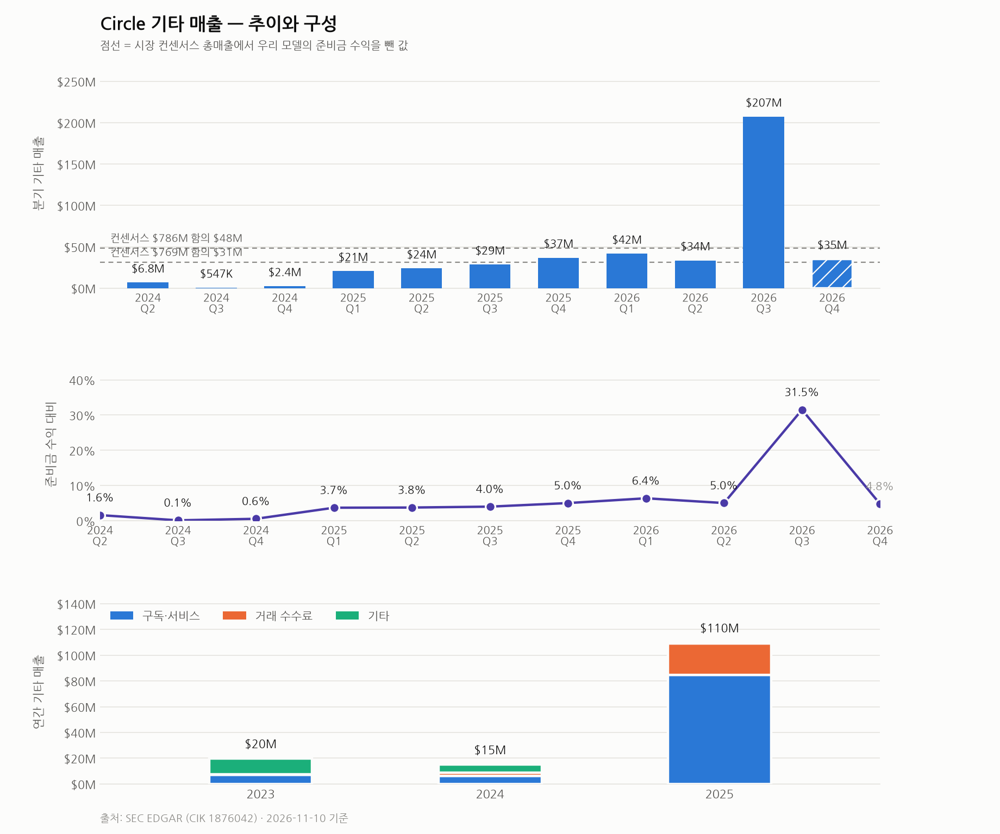
Circle이 발행하는 코인별 유통량
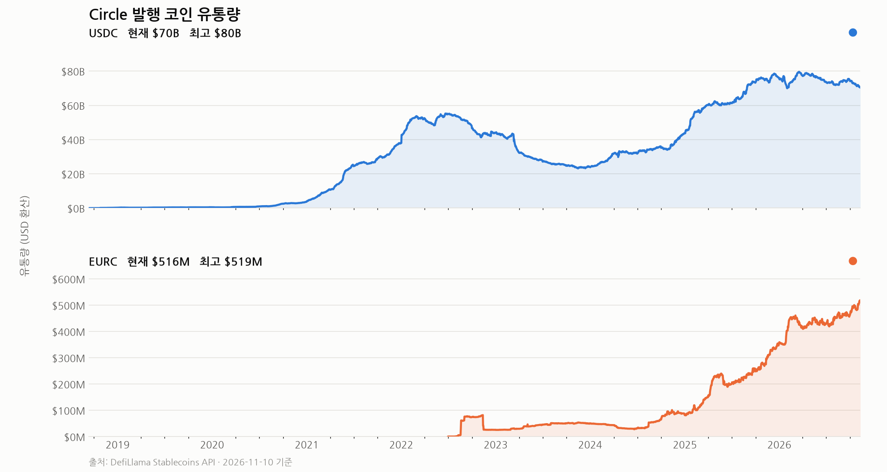